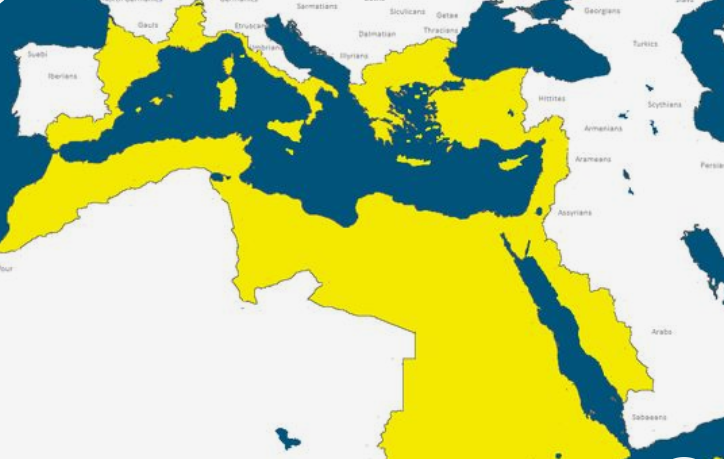
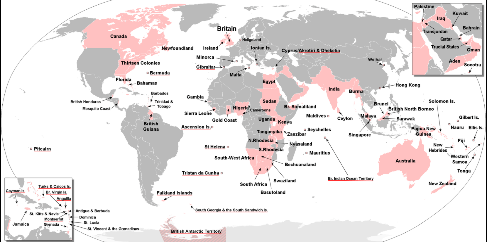

India

Throughout the centuries, many empires and kingdoms in India rose and fell. The Indian soil has seen great civilizations and their names have been written in History.
- Maurya Empire (322 to 185 BC)
- Gupta Empire (320 to 550 AD)
- The Mughal Empire (1526 - 1857 AD)
- Chola Empire (301 BC - 1279 AD)
- Chalukya Empire (543-1156 AD)
- Maratha Empire (1674-1820 AD)
- Vijayanagara Empire (1336-1660 AD)
- Khilji Empire (1290-1320 AD)
- British Empire (1858 and 1947 AD)
- Pala Empire (750-1174 CE)
- Kushan Empire (30-375 AD)
- Tughlaq dynasty (1320-1414 AD)
- Indo-Greek Kingdom (180 BC - 10 AD)
- Satavahana dynasty (230 BC - 199 AD)
Rome

In 117 CE, the Roman Empire had a land area of 2,500,000 miles. The Empire stretched from Scotland in the North to Ethiopia in the South, and from the Persian Gulf in the East to the coast of Portugal in the West.
Dynasties of the Principate:
- Julio–Claudian dynasty
- Flavian dynasty
- Nerva–Antonine dynasty
- Severan dynasty
- Gordian dynasty
- Decian dynasty
- Valerian dynasty
- Caran dynasty
Dynasties of the Dominate:
- Constantinian dynasty
- Valentinianic dynasty
- Theodosian dynasty
Eastern (Byzantine) dynasties:
- Leonid dynasty
- Justinian dynasty
- Heraclian dynasty
- Isaurian dynasty
- Nikephorian dynasty
- Amorian dynasty
- Macedonian dynasty
- Komnenid dynasty
- Doukid dynasty
- Angelid dynasty
- Laskarid dynasty
- Palaiologan dynasty
Egypt
The Egyptian Empire rose during the period of the New Kingdom (c. 1570- c. 1069 BCE), when the country reached its height of wealth, international prestige, and military might.
The empire stretched from modern-day Syria in the north to modern-day Sudan in the south and from the region of Jordan in the east to Libya in the west.
Egyptian Old Kingdom Dynasties – In 300 BC the Egyptian historian Manetho wrote a history of Egypt called Aegyptiaca, which put the number of dynasties (ruling Families) at thirty.
British Empire
The British Empire was composed of the dominions, colonies, protectorates, mandates, and other territories ruled or administered by the United Kingdom and its predecessor states.
It began with the overseas possessions and trading posts established by England between the late 16th and early 18th centuries.
At its height it was the largest empire in history and, for over a century, was the foremost global power. At the peak of its power, it was described as "the empire on which the sun never sets", as the sun was always shining on at least one of its territories.